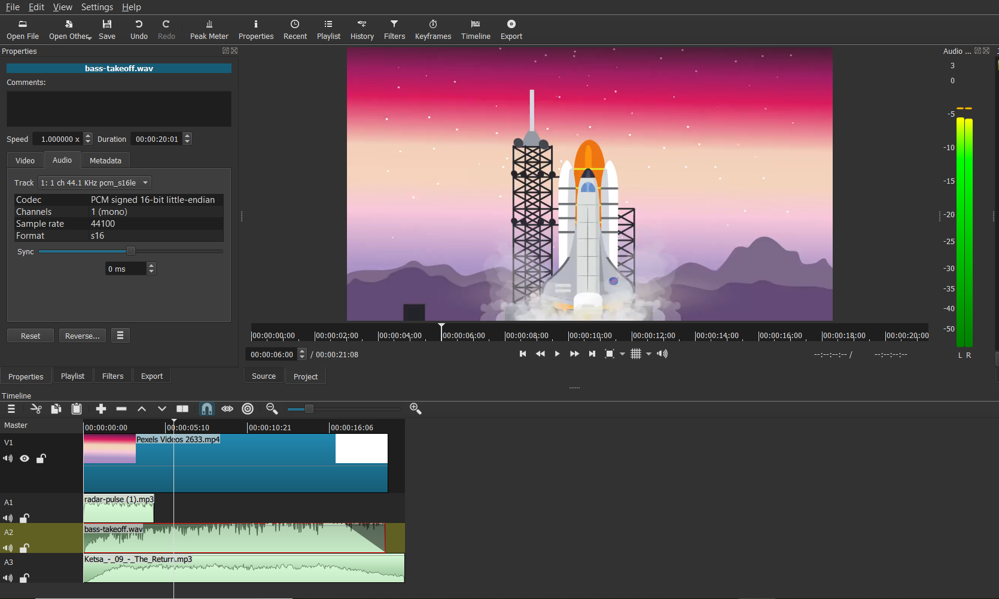

Created the radar sound effect by generating a square wave in audacity changing the feedback levels to give it a pulsing sound. For the take off sound effect I generated white noise in audacity and then increased the bass in the audio clip and reduced the treble, also added a fade into the sound effect.
Sources:
Original video: Animated Video of Rocket Ship
Music: The Return
SX 1
SX 2